Qué hace el mockup funcional de KARGO, cómo se recorre de punta a punta, qué ocurre al presionar cada botón y qué es real y qué es simulado.
Un mockup navegable que demuestra todo el flujo de una encomienda: desde que el merchant la crea hasta que se entrega en la bodega de destino, pasando por coordinación, aceptación del operador, recolección, bodegas, bus y última milla. Sirve para mostrar el sistema y para que el equipo de backend tenga claro qué construir.
| Tramo | Qué cubre | Roles que intervienen |
|---|---|---|
| First Mile | Crear la orden, asignar, aceptar y recolectar con escaneo y firma. | Merchant, Coordinador, Despachador, Conductor de recolección |
| Mid Mile | Ingreso a bodega del operador, asignación del bus, carga y llegada a la bodega de destino. | Encargado de bodega, Conductor de bus |
| Last Mile | Entrega en la bodega del merchant (con el operador) o retiro del destinatario. | Despachador, Conductor de última milla, Encargado de bodega |
| Soporte | Control Tower, Auditoría, Finanzas, onboarding. | Coordinador, Auditoría, Finanzas |
Solo necesita Node 18 o superior; no hay que instalar dependencias. npm start es un servidor de archivos estáticos: los navegadores no permiten leer los JSON desde un archivo suelto.
| Comando | Qué hace |
|---|---|
| npm start | Sirve el mockup en el puerto 3000 (otro puerto: $env:PORT=3001; npm start). |
| npm test | Corre las 17 pruebas: flujo completo, permisos, KPIs y cobertura de traducciones. |
| npm run seed | Regenera los datos de ejemplo (web/data) ejecutando un escenario por las reglas reales. |
Es un sitio 100 % estático. Publica la carpeta web/ como raíz: en Vercel, Framework Preset "Other", Build Command vacío y Output Directory web. Como los datos viajan dentro de web/data, no hay nada más que configurar.
La dirección acepta parámetros: ?as=usr_210&lang=en&view=mobile#/order/ot_00007
| Parte | Significado |
|---|---|
| as= | Identificador del usuario (ver la lista en la sección 10). |
| lang= | es o en. |
| view= | mobile o desktop. |
| still=1 | Desactiva las animaciones (útil para tomar capturas). |
| #/order/ot_00007 | Abre directamente esa orden. |
Está siempre visible y no forma parte del producto real: existe para recorrer el flujo cambiando de persona.
En el detalle de cualquier orden no entregada aparece un aviso naranja: "Siguiente: <persona> (<rol>). Ver como esta persona". El enlace cambia a esa persona y abre la misma orden. Así el recorrido se hace sin buscar en la lista.
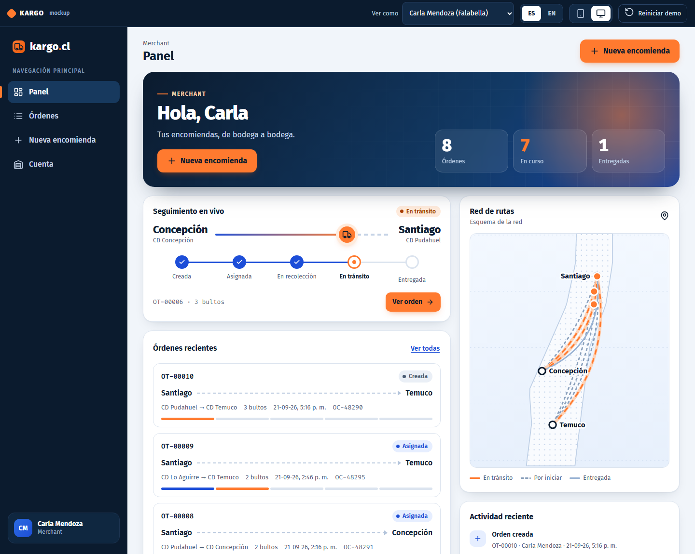
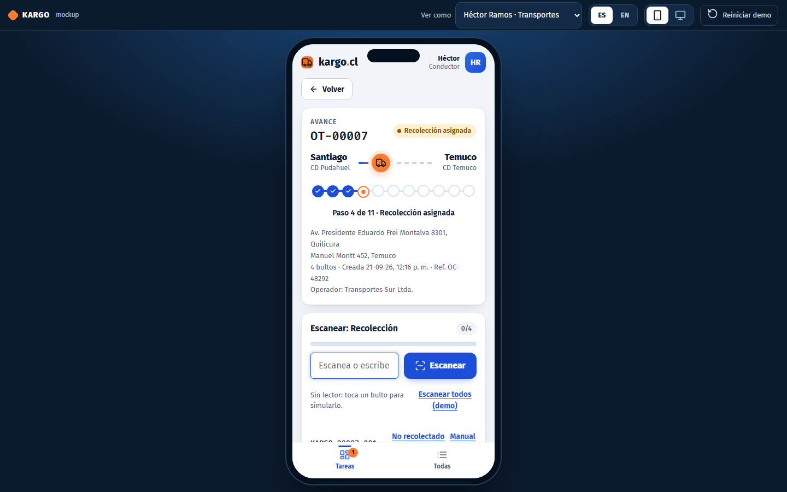
| Componente | Qué significa |
|---|---|
| Chip de estado | Estado de la orden. El merchant ve 5 estados; el resto de los roles ve el paso interno (por ejemplo "Aceptada por despachador"). |
| Riel de progreso | Puntos conectados: azul con visto = completado, naranja con pulso = paso actual, gris = pendiente. Para el merchant tiene 5 puntos; para el resto, uno por cada paso interno (10 u 11). |
| Tarjeta de ruta | Ciudad de origen → ciudad de destino con un camión que avanza según el progreso. |
| Chip naranja "Dif. +1" / "N incidencias" | Diferencia de conteo respecto de lo declarado, e incidencias abiertas. |
| Mapa de rutas | Esquema de Chile ajustado a las ciudades en uso. Línea naranja animada = en tránsito; punteada = aún no sale; gris = entregada. Es un esquema, no un mapa exacto ni GPS. |
| Actividad reciente | Los últimos 6 eventos de las órdenes que el usuario puede ver. |
| Aviso emergente (toast) | Confirma cada acción ("Orden asignada") o explica el error ("Faltan 1 de 4 bultos por escanear"). Se traduce según el idioma. |
ESC = escaneo de cada bulto · FIRMA = firma de persona autorizada · 10a última milla con el operador · 10b retiro del destinatario · la descarga del bus no se escanea.
| # | Estado | Quién actúa | Acción | Para avanzar exige | El merchant ve |
|---|---|---|---|---|---|
| 1 | creada | Merchant | Crea la orden | Datos válidos (ver sección 7.1) | Creada |
| 2 | asignada_operador | Coordinador | Elige operador y modalidad de última milla | Operador válido | Asignada |
| 3 | aceptada | Despachador | Acepta (o rechaza con motivo → vuelve a "creada") | Motivo si rechaza | Asignada |
| 4 | recoleccion_asignada | Despachador | Designa conductor y móvil | Conductor y móvil de su operador | En recolección |
| 5 | recolectada | Conductor de recolección | Ajusta cantidad si difiere, escanea, verifica y firma | Todos los bultos activos escaneados + persona autorizada + RUT verificado + firma | En tránsito |
| 6 | en_bodega_operador | Encargado de bodega | Escanea el ingreso | Todos los bultos escaneados | En tránsito |
| 7 | asignada_transporte | Encargado de bodega | Elige servicio y salida de la parrilla y conductor de bus | Servicio que cubra la ruta | En tránsito |
| 8 | cargada_bus | Conductor de bus | Escanea la carga | Todos los bultos escaneados | En tránsito |
| 9 | en_bodega_destino | Encargado de bodega | Escanea el ingreso a destino | Todos los bultos escaneados | En tránsito |
| 10a | ultima_milla_asignada | Despachador | Designa conductor de entrega y móvil | Conductor y móvil válidos | En tránsito |
| 10b | lista_retiro | Encargado de bodega | Marca la carga lista para retiro | Modalidad "retiro" | En tránsito + aviso con el punto de retiro |
| 11 | entregada | Conductor de entrega (o encargado en retiro) | Escanea y recibe la firma | Bultos escaneados + persona autorizada de destino + RUT + firma | Entregada |
| Regla | Cómo funciona |
|---|---|
| Escaneo | Cada traspaso físico exige escanear cada bulto (usuario, fecha y hora). En el mockup se escribe o pega el código y se presiona Escanear; un lector USB sirve porque escribe como teclado. Para demostrar sin lector: tocar Escanear en cada bulto o Escanear todos (demo). |
| Registro manual | Si un escaneo falla, el botón Manual pide un motivo y registra el bulto igual, marcado como "Manual" y visible en el registro de eventos. |
| Firma | Solo en la recolección y la entrega final: se elige a una persona autorizada, se marca que se verificó el RUT contra la cédula y se firma en el recuadro. Sin las tres cosas no se avanza. |
| Personas autorizadas | Al crear la orden el merchant registra al menos 2 por punto (origen y destino) con nombre, RUT válido y teléfono. Es la única verificación de identidad: se compara visualmente con la cédula. |
| Trabajo asignado a otro | Un conductor solo puede escanear su recolección o su bus; otro conductor recibe "Esta recolección está asignada a otro conductor". |
| Visibilidad | El merchant ve solo sus órdenes; cada operador, solo las asignadas a él; Coordinador, Auditoría y Finanzas ven todas (las dos últimas sin poder operar). |
| Cantidad de bultos | Lo declarado por el merchant no cambia nunca. El conductor puede ajustar lo recolectado, siempre con motivo; queda la diferencia y una incidencia abierta. |
| Ventana del bus | Si el servicio elegido sale a más de 2 horas de la asignación se marca "Riesgo > 2 h". Al cargar se mide si se cumplió. |
| Registro de eventos | Cada acción escribe un evento con persona, rol, fecha y nota. La línea de tiempo y el historial de cada bulto salen de ahí; no se puede editar. |
| RUT | Se valida el dígito verificador. Un RUT inválido se marca en rojo mientras se escribe. |
Objetivo: crear la orden y seguir el avance. No asigna, no escanea, no gestiona la operación. Menú: Panel · Órdenes · Nueva encomienda · Cuenta.
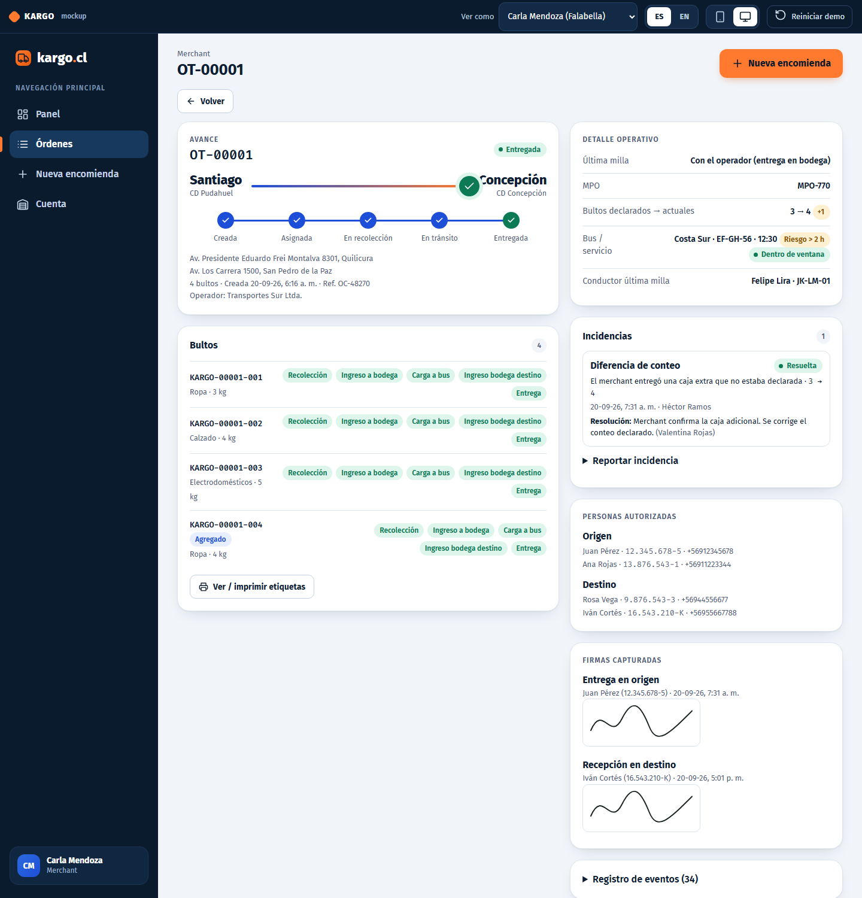
Arriba hay un indicador de pasos. En escritorio, un panel de Resumen a la derecha muestra ruta, autorizados, bultos y peso total mientras escribes.
| Paso | Campo o botón | Qué hace |
|---|---|---|
| 1 · Origen y destino | Ciudad de origen / Bodega de origen | Si el merchant tiene una sola bodega, se usa esa y no se pregunta. Si tiene varias, se elige la ciudad y luego la bodega de esa ciudad. |
| Bodega de destino | Lista de las otras bodegas del merchant. La opción + Registrar bodega nueva… abre un formulario dentro del asistente (ver "Cuenta"). | |
| Referencia interna / OC | Opcional. Aparece en listas y tablas. | |
| MPO / lote | Opcional. Agrupa órdenes de un mismo lote para el indicador de cumplimiento MPO. | |
| Continuar | Exige elegir el destino ("Elige la bodega de destino"). | |
| 2 · Autorizados | Nombre · RUT · Teléfono | Vienen precargados con los contactos de cada bodega y son editables por orden. El RUT se pone rojo si es inválido. |
| + Agregar otra persona | Suma una fila vacía en ese punto. | |
| Atrás / Continuar | Navega entre pasos. | |
| 3 · Bultos | Contenido · Peso aprox. · Valor | Contenido y peso son obligatorios; el valor declarado es opcional. |
| Duplicar | Copia el bulto (útil para varias cajas iguales). | |
| Quitar | Elimina el bulto (siempre queda al menos uno). | |
| + Agregar bulto | Suma un bulto vacío. | |
| Crear orden | Valida todo. Si falla, muestra el error y vuelve al paso correspondiente (autorizados o bultos). |
Al crear: pantalla de confirmación con el código de la orden y tres botones: Imprimir etiquetas (una por bulto, con código de barras y "i/n"), Ver orden y Crear otra. La orden queda en "Creada", a la espera del Coordinador.
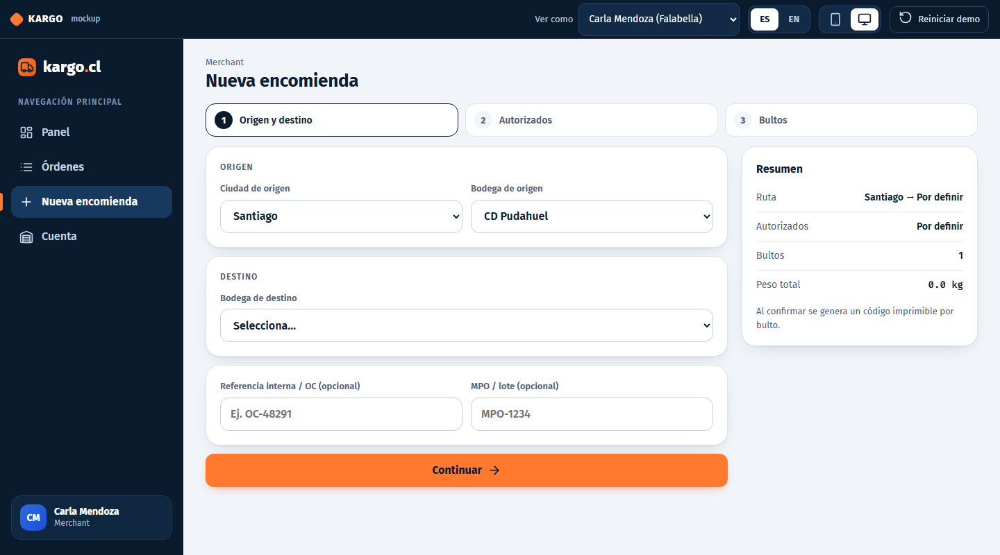
Riel de 5 pasos · Detalle operativo (modalidad de última milla, MPO, bultos declarados → actuales con la diferencia, servicio del bus y si cumplió la ventana, punto de retiro) · aviso naranja de retiro cuando corresponde · Bultos con el punto donde ha sido escaneado cada uno · Incidencias (puede reportar una) · Personas autorizadas · Firmas capturadas · Registro de eventos.
Desde Ver / imprimir etiquetas: una etiqueta por bulto con orden, "i/n", código de barras Code 39, código legible, destino, contenido y peso. Imprimir abre el diálogo del navegador (solo se imprimen las etiquetas).
Objetivo: asignar las órdenes, vigilar la operación, registrar merchants (KAM) e incorporar operadores. Menú: Tareas · Todas · Torre de control · Merchants · Operadores.
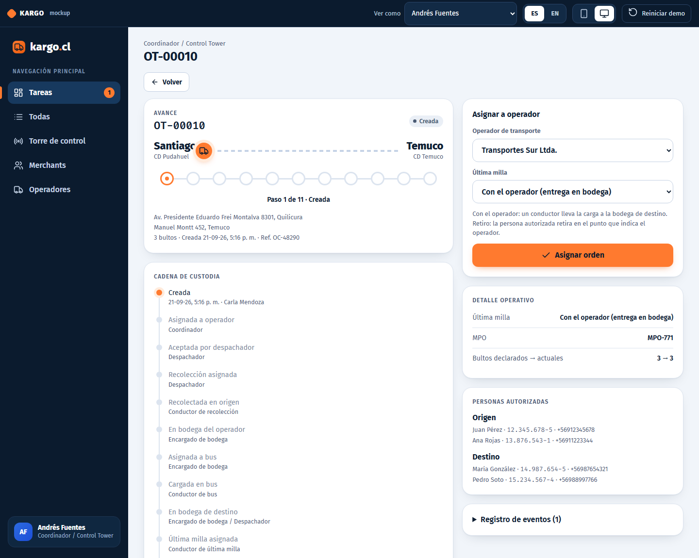
Objetivo: aceptar o rechazar lo que le asigna el Coordinador, designar la recolección y, cuando corresponde, la última milla. Menú: Tareas · Todas. Solo ve las órdenes de su operador.
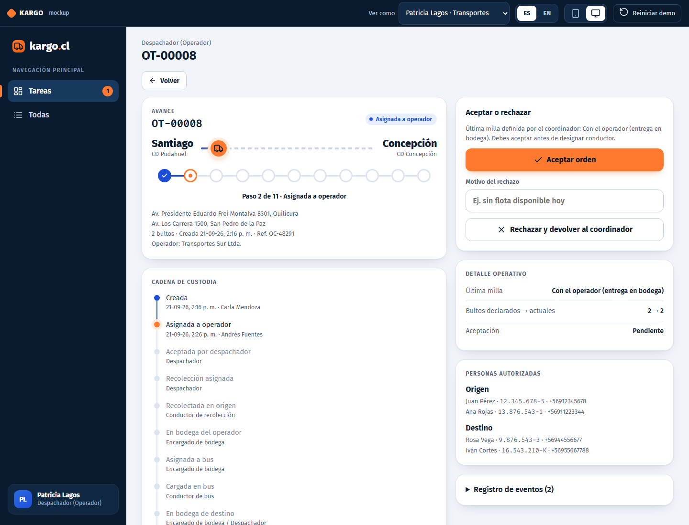
Objetivo: retirar la carga en la bodega del merchant con escaneo por bulto y firma. Su lista "Te toca actuar" trae solo las recolecciones que se le asignaron.
Aparece cuando todos los bultos activos están escaneados: elige a la persona autorizada que entrega (lista del origen), marca "Verifiqué el RUT contra la cédula", firma en el recuadro (Limpiar lo borra) y presiona Confirmar traspaso. Pasa a "Recolectada".
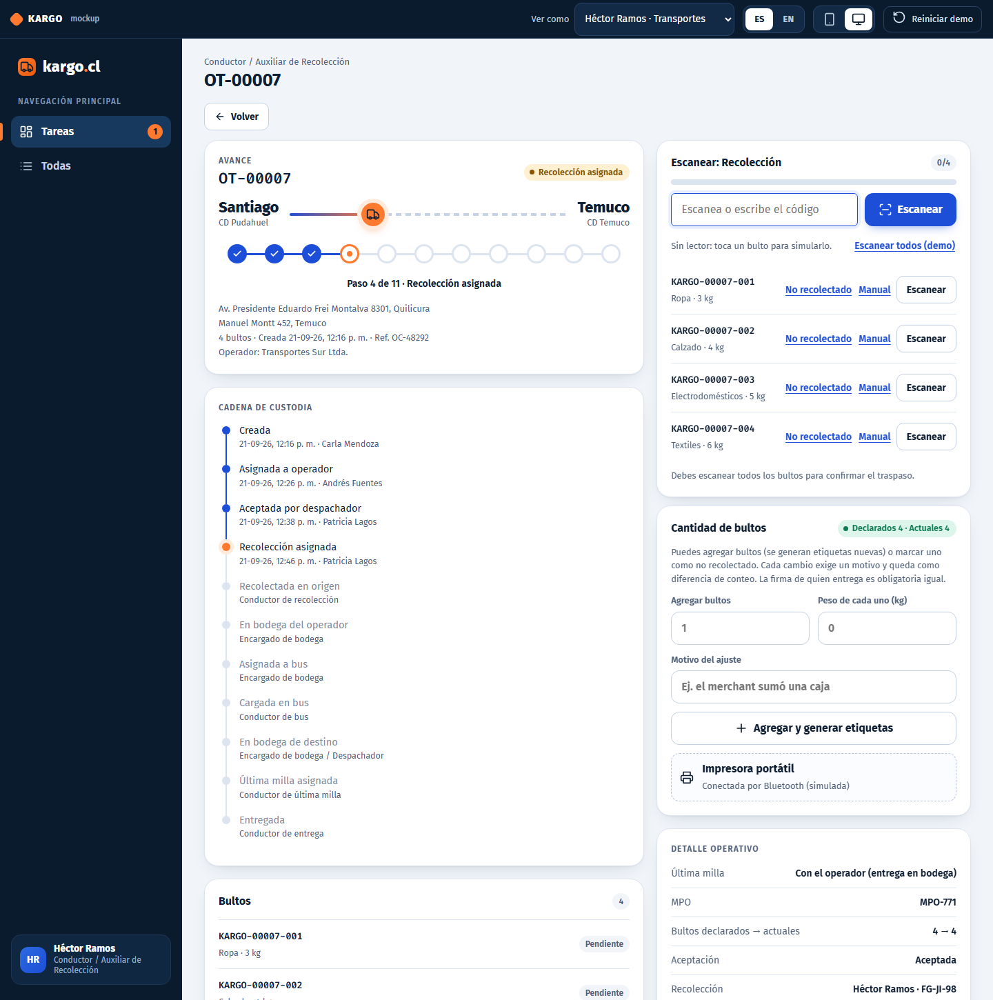
Objetivo: controlar la carga que entra y sale de las bodegas del operador y asignar el bus. Es el rol con más tareas distintas.
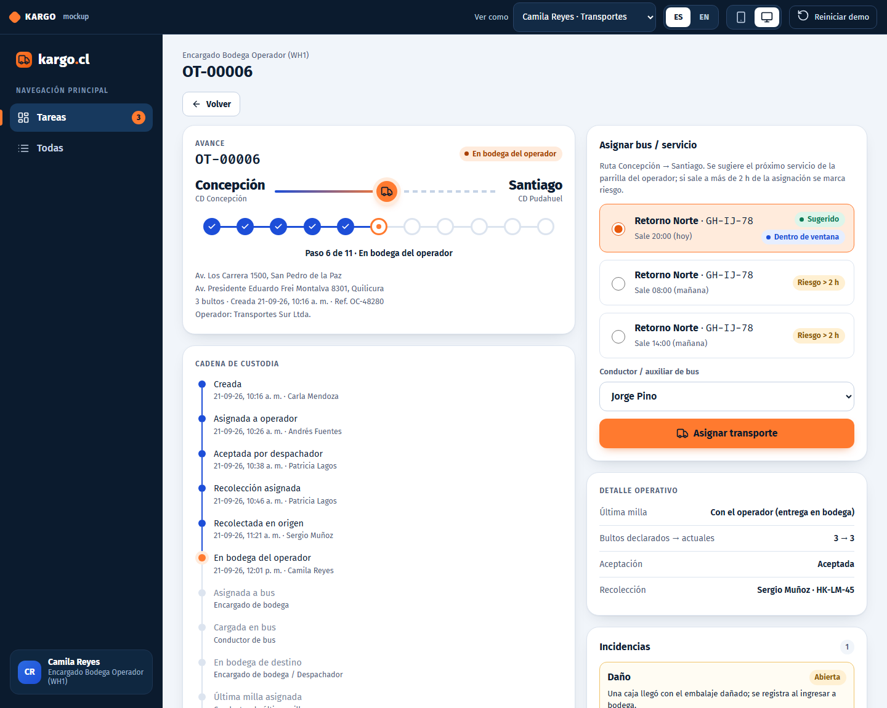
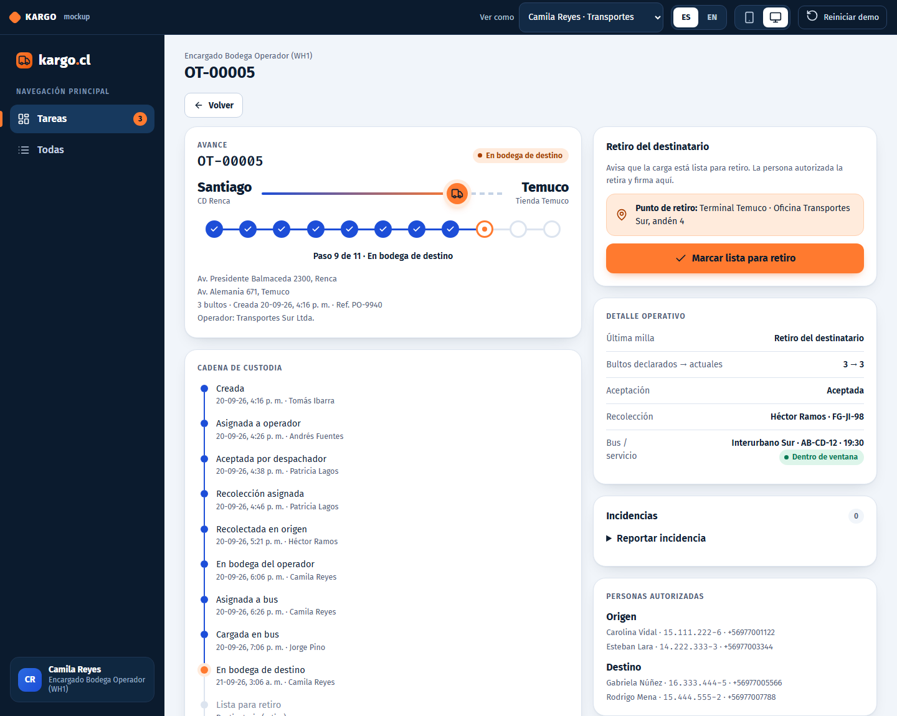
Objetivo: confirmar la carga al bus. Solo ve las órdenes donde el bodeguero lo designó a él.
Objetivo: entregar la carga en la bodega del merchant cuando la modalidad es "con el operador". Solo ve las entregas que el despachador le designó.
Objetivo: comprobar que las cantidades cuadran en cada punto de control y cerrar los casos. Es solo lectura, salvo cerrar incidencias. Menú: Auditoría · Todas.
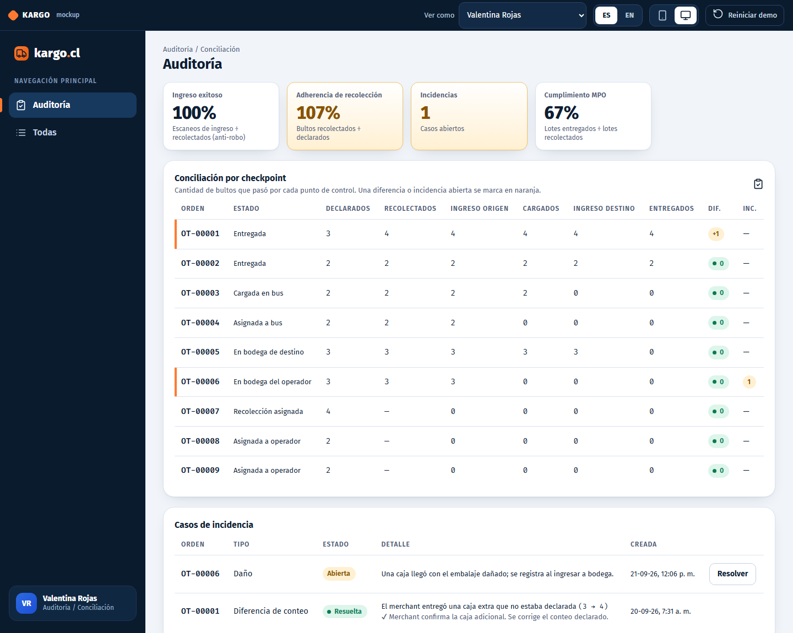
Objetivo: preparar la facturación y el pago. Solo lectura y sin precios (el modelo comercial está pendiente). Menú: Finanzas · Todas.
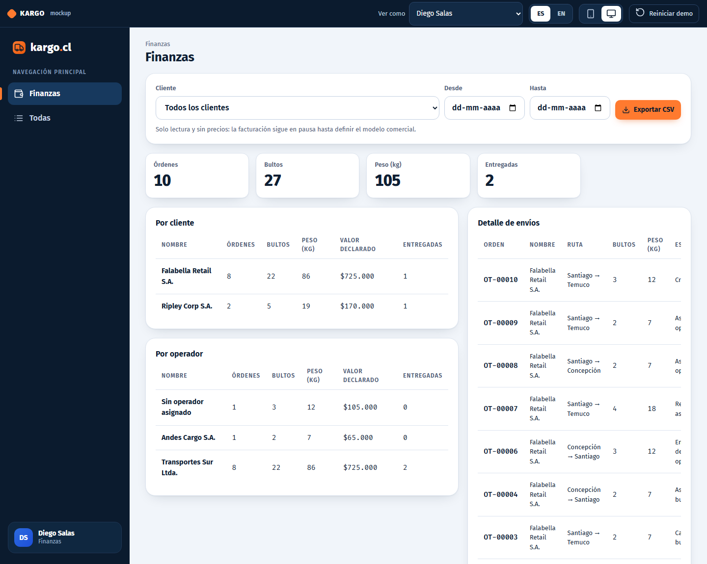
Todos se calculan en el mockup con el registro de eventos y los datos de las órdenes (Coordinador → Torre de control).
| Indicador | Fórmula exacta | Notas |
|---|---|---|
| SSP · Recolecciones exitosas | órdenes con recolección completada ÷ órdenes que alguna vez tuvieron operador | Sobre todo el período. |
| Tasa de aceptación | órdenes en estado de aceptación "aceptada" ÷ (órdenes con operador + rechazos registrados) | Un rechazo cuenta como asignación. |
| PTAT | promedio de (ingreso a bodega del operador − asignación al operador) en horas | Una decimal. |
| Adherencia de recolección | Σ bultos recolectados ÷ Σ bultos declarados, en órdenes ya recolectadas | > 100 % si se agregaron bultos. |
| Ingreso exitoso | Σ escaneos de ingreso a bodega origen ÷ Σ bultos recolectados, en órdenes que ya ingresaron | Contra robo en tránsito. |
| Nivel de servicio | entregas con R ≤ 1 ÷ entregas, con R = (entrega − creación) ÷ horas prometidas (48 h) | También muestra R promedio. |
| Ventana de bus | órdenes cargadas dentro de 2 h desde la asignación ÷ órdenes cargadas | Las 2 h están en config.json. |
| Cumplimiento MPO | lotes con todas sus órdenes entregadas ÷ lotes con alguna orden recolectada | Lote = mismo valor de MPO. |
| Costo por bulto | Σ costo diario de los vehículos distintos usados en recolecciones ÷ bultos recolectados | Costos de demostración. |
| Órdenes en riesgo | órdenes en "asignada_transporte" con salida a más de 2 h de la asignación, o cuya ventana ya venció sin cargar | Lista, no porcentaje. |
Están en web/data/. Son el contrato para el equipo de backend: cada archivo simula una tabla.
| Archivo | Contenido | Campos a destacar |
|---|---|---|
| merchants.json | Merchants y sus bodegas. | bodegas: ciudad, dirección (con codigo_postal), contactos autorizados (nombre, RUT, teléfono). |
| users.json | Usuarios de ejemplo (sin contraseña). | rol, merchant_id u operador_id. |
| operators.json | Operadores importados. | vehículos (costo_dia), servicios (origen, destino, salidas), puntos_retiro. |
| konnect.json | Catálogo de Konnect (simulado). | lo mismo que operadores más su equipo. |
| roles.json | 9 roles y sus permisos. | lista de permisos y de acciones no permitidas. |
| orders.json | Órdenes. | status, conteo, operacion (aceptación, recolección, transporte, última milla), handoff (firmas), timeline. |
| packages.json | Bultos. | piece_code, scan_history, marca de agregado o no recolectado. |
| tracking_events.json | Registro de eventos (solo se agrega). | tipo, actor, fecha, nota. |
| incidents.json | Incidencias. | tipo, estado, detalle, esperado/real, foto, resolución. |
| config.json | Reglas de negocio. | sla_promesa_horas (48), ventana_bus_horas (2). |
| invoices.json | Facturas. | Vacío a propósito (en pausa). |
Al reiniciar, hay 10 órdenes en distintos estados y 2 incidencias. Se generaron ejecutando el flujo real con un reloj simulado.
| Orden | Cliente | Ruta | Bultos | Estado | Qué se puede probar |
|---|---|---|---|---|---|
| ot_00001 | Falabella | Santiago → Concepción | 3 → 4 | Entregada | Ver diferencia +1, firmas, incidencia resuelta por Auditoría. |
| ot_00002 | Ripley | Temuco → Santiago | 2 | Entregada | Última milla por retiro del destinatario. |
| ot_00003 | Falabella | Santiago → Temuco | 2 | Cargada en bus | Camila escanea el ingreso a bodega destino. |
| ot_00004 | Falabella | Concepción → Santiago | 2 | Asignada a bus | Riesgo > 2 h y ventana vencida (sale en la Torre de control). |
| ot_00005 | Ripley | Santiago → Temuco | 3 | En bodega destino | Camila marca "lista para retiro" (modalidad retiro). |
| ot_00006 | Falabella | Concepción → Santiago | 3 | En bodega del operador | Asignar bus con sugerencia; incidencia de daño abierta. |
| ot_00007 | Falabella | Santiago → Temuco | 4 | Recolección asignada | Héctor: ajustar cantidad, escanear, firmar. |
| ot_00008 | Falabella | Santiago → Concepción | 2 | Asignada a operador (Sur) | Patricia acepta o rechaza. |
| ot_00009 | Falabella | Santiago → Temuco | 2 | Asignada a operador (Andes) | Marcela rechaza; Andrés reasigna. |
| ot_00010 | Falabella | Santiago → Temuco | 3 | Creada | Andrés asigna eligiendo la última milla. |
| Rol | Personas (id) |
|---|---|
| Merchant | Carla Mendoza — Falabella (usr_042) · Tomás Ibarra — Ripley (usr_043) |
| Coordinador / Control Tower | Andrés Fuentes (usr_c01) |
| Auditoría · Finanzas | Valentina Rojas (usr_a01) · Diego Salas (usr_f01) |
| Operador Transportes Sur | Despachador Patricia Lagos (usr_d05) · Recolección Héctor Ramos (usr_210), Sergio Muñoz (usr_211) · Bodega Camila Reyes (usr_305) · Bus Jorge Pino (usr_301), Daniel Araya (usr_302) · Entrega Felipe Lira (usr_401) |
| Operador Andes Cargo | Despachadora Marcela Núñez (usr_d06) · Recolección Tomás Vera (usr_212) · Bodega Elena Campos (usr_306) · Bus Raúl Godoy (usr_303) · Entrega Nicolás Paz (usr_402) |
Igual que A, pero Andrés elige Retiro del destinatario. En el paso 8 no interviene Patricia: Camila marca "lista para retiro" (Carla ve el aviso con el punto de retiro) y luego escanea, elige la persona de destino y toma la firma. Atajo: la orden ot_00005 ya está lista para este paso.
Héctor agrega 1 bulto con motivo → se generan etiquetas nuevas → escanea los 5 → firma. Luego mira: Carla (chip "Dif. +1" y detalle operativo), Andrés (incidencia en la Torre; adherencia > 100 %), Valentina (fila resaltada; resuelve el caso con una nota).
Marcela (Andes) escribe un motivo y rechaza → Andrés ve la orden en "Te toca actuar" con el aviso del rechazo y la asigna a Sur → Patricia la acepta.
Camila elige una salida marcada "Riesgo > 2 h" y asigna → Andrés la ve en "Órdenes en riesgo" de la Torre de control.
Andrés → Merchants → registra un merchant (RUT válido) y le agrega una bodega → Operadores → importa "Pacífico Cargo" y abre su parrilla y flota. Los nuevos usuarios aparecen en "Ver como".
| En el mockup | En el sistema real |
|---|---|
| Selección de usuario sin contraseña | Inicio de sesión y permisos en el servidor |
| Datos en el navegador | Base de datos, concurrencia y auditoría inmutable |
| Escaneo por teclado o botón; firma como imagen dentro del JSON | Cámara del teléfono; archivo de firma guardado |
| Code 39 e impresora portátil simulada | QR o DataMatrix e impresora Bluetooth |
| Catálogo konnect.json y sugerencia con la hora del navegador | Prefetch real desde Konnect y reloj del servidor |
| Mapa esquemático | Mapa real con GPS de los vehículos |
| Indicadores calculados en el navegador | Cálculo en el backend o herramienta de BI |
| Término | Significado |
|---|---|
| OT | Orden de transporte (una encomienda con uno o más bultos). |
| KAM | Key Account Manager: quien registra a los merchants. |
| Parrilla | Lista de servicios de un operador (ruta y horas de salida). |
| Checkpoint | Punto de control donde se escanea cada bulto. |
| MPO | Orden de compra maestra (supuesto): agrupa lotes de varias órdenes. |
| SSP / PTAT / PA | Recolecciones exitosas / Tiempo de recolección / Adherencia de recolección. |
| CPS | Costo por envío (aquí, por bulto). |
| WH1 | Bodega del operador. |
| Konnect | Plataforma de la que provienen operadores, buses, servicios y equipos. |
Documento complementario: "KARGO — Cambios después de la revisión del consultor".